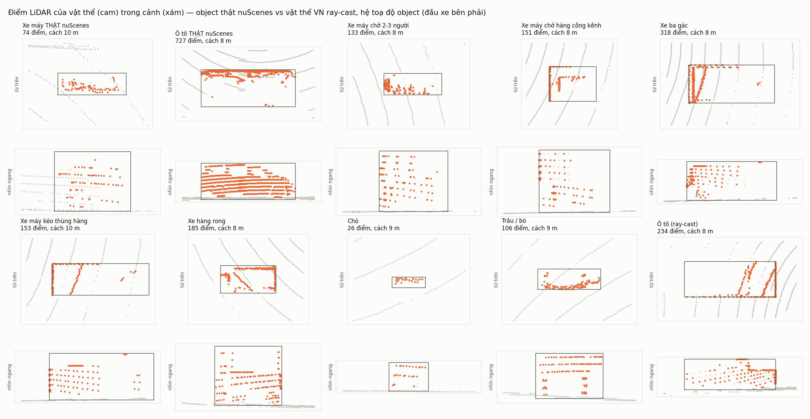
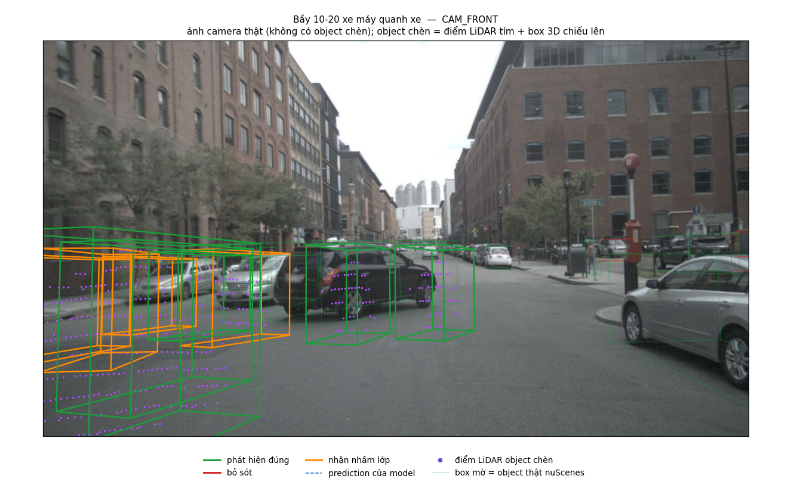
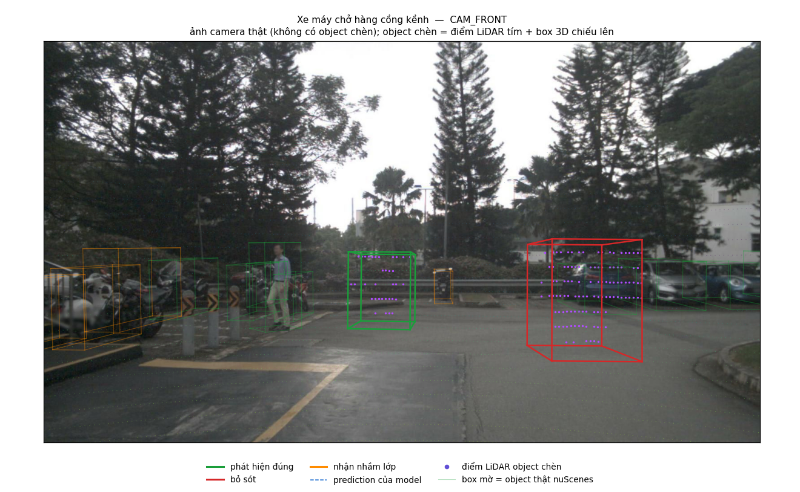
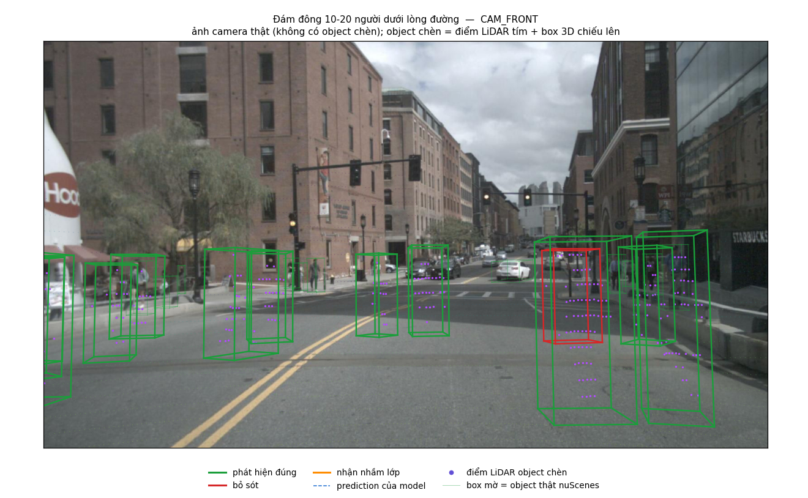
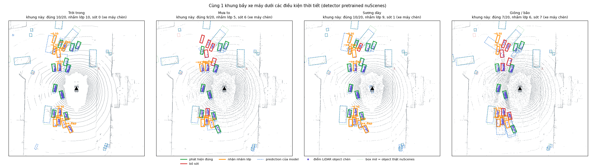
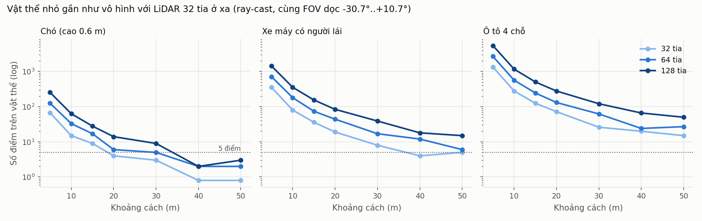

Chèn vật thể, kịch bản và thời tiết Việt Nam vào point cloud thật của nuScenes — đúng vật lý LiDAR — rồi chứng minh dữ liệu sinh ra phơi bày được điểm yếu mà dữ liệu gốc không cho thấy.
Detector: CenterPoint-PointPillar pretrained nuScenes · Đánh giá: nuScenes mini_val · Demo: index.html
Hệ quả đo được: ngay trên dữ liệu thật, detector chỉ tìm ra 55% xe máy (ô tô 93%, người 95%) — lớp phương tiện phổ biến nhất ở Việt Nam lại là lớp yếu nhất.
Tự thu LiDAR ở Việt Nam: cần xe gắn cảm biến, gán nhãn 3D, chờ gặp đủ tình huống hiếm → đắt và chậm.
| Kiểm chứng | Kết quả |
|---|---|
| Mật độ điểm xe chèn so với xe thật cùng khoảng cách | 0.98 lần |
| Detector thấy xe máy chèn (vị trí bình thường) như xe máy thật | 93% |
| Ô tô ray-cast so với ô tô thật | 93% vs 93% → đạt |
| Xe máy ray-cast so với xe máy thật | 64% vs 94% → chưa đạt, chỉ so tương đối |

| Xe máy | Recall | CI 95% |
|---|---|---|
| Đối chứng (đi cùng chiều) | 93% | 91–96% |
| Bầy 10-20 xe | 81% | 79–83% |
| Cắt đầu 3-8 m | 100% |
-12 điểm (CI -15 .. -9) — có ý nghĩa thống kê. Cùng số điểm LiDAR vẫn kém hơn; bầy càng đông càng kém; lỗi chính: xe máy bị nhận thành ô tô.

| Kịch bản | Recall |
|---|---|
| Đối chứng xe máy ray-cast | 64% |
| Chở 2-3 người | 60% (không khác biệt) |
| Chở hàng cồng kềnh | 29% (-35 điểm) |
| Xe ba gác (thấy vật cản) | 96% |
| Chó lao ra (thấy vật cản) | 94% |
| Trâu / bò | 98% |
Khối hàng rộng 1-1.8 m làm xe máy không giống xe máy nào trong dữ liệu train → bị nhận thành ô tô / xe đạp, 21% bị sót hẳn.

| Số người | Recall |
|---|---|
| 1 người (jaywalk) | 100% |
| nhóm 3-8 người | 99% |
| đám đông 10-20 | 99% |
nuScenes có rất nhiều đám người đi bộ nhưng 0% bầy xe máy → model yếu đúng chỗ dữ liệu train thiếu. Đây là bằng chứng cho pain point: cần dữ liệu đúng tình huống Việt Nam.

| Recall | Trời trong | Mưa to | Sương dày | Giông / bão |
|---|---|---|---|---|
| Ô tô | 93% | 80% | 73% | 71% |
| Người đi bộ | 95% | 64% | 51% | 55% |
| Xe máy trong bầy | 80% | 64% | 76% | 57% |

Số điểm LiDAR trên con chó (cao 0.6 m): 15 điểm ở 10 m, 4 ở 20 m, 0 ở 40 m. LiDAR 128 tia: 14 điểm ở 20 m. Đây là giới hạn phần cứng, không phải của model.

Bầy xe máy
Xe máy chở hàng
Bầy xe trong giông bão
Xem 3D từng trường hợp, góc nhìn camera, thời tiết: mở trang demo